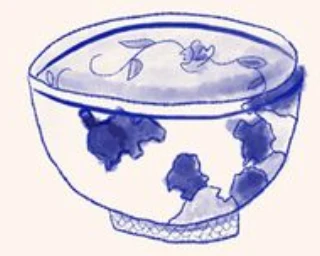
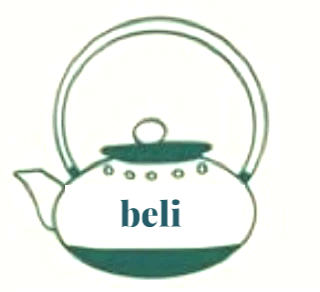
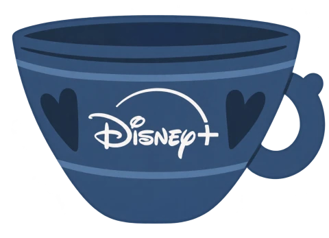
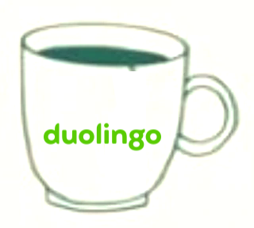
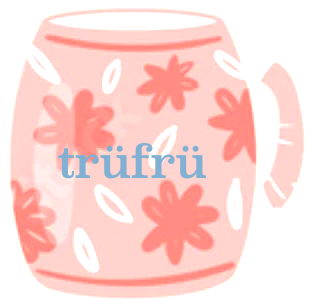
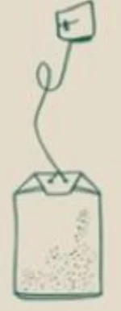
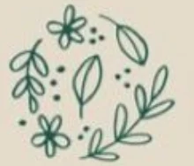
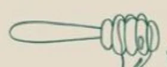
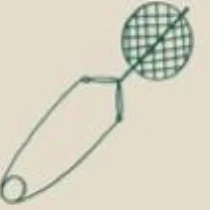
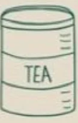

Bella Cha’s case studies examine Beli discovery and ranking, Disney+ browsing, Duolingo onboarding, and TruFru shopping. Enable JavaScript to read summaries. Final slides, prototypes, and contact details have not been added yet.